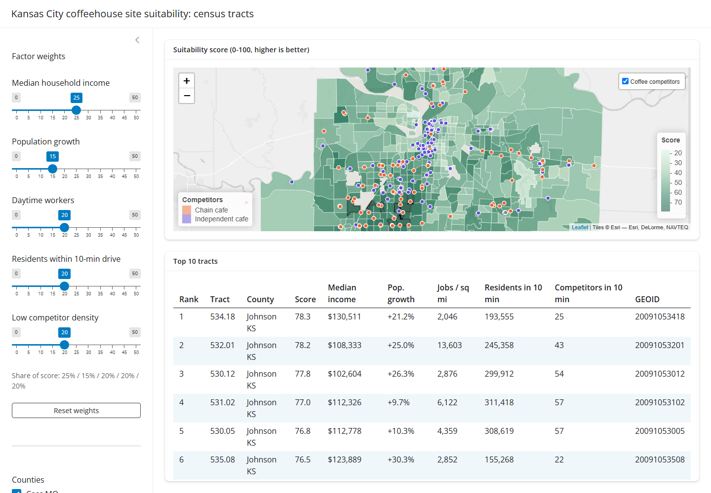

Portfolio project · Kansas City metro · public data
Where should the next coffeehouses in Kansas City open?
I built this three-part project to answer a question a coffee company's expansion team really faces:
where in the Kansas City metro should the next stores go? I used only free public data (Census income, population
and job counts, plus OpenStreetMap cafes and roads) and worked through it the way I would on the job. First, I
profiled the raw data in SQL to find what would quietly break the analysis: one Census error code alone turned
average household income into −$25 million. Second, I applied those fixes in Python, scored all 551 census
tracts on income, growth, daytime workers, drive-time reach and competition, and built an interactive R Shiny map
to explore the results. Third, I turned the ranking into a one-page memo that recommends five sites, with tradeoffs
and risks, for a reader who will never open the code. Each part feeds the next, and each has its own page above.
The workflow
1
Check the data
Question
Is the public data reliable enough to support a site decision?
Tools
Python, DuckDB, SQL
Deliverable
Data quality report with seven checks and five fixes
Before building any model, I wanted to know what in the raw data would mislead it. I loaded the Census
and OpenStreetMap data into DuckDB without cleaning it, so the problems would still be visible, and ran seven
SQL checks. Most of the data was solid, but two issues would have quietly wrecked a site-selection model: Census error
codes hiding in the income column, and coffee chains spelled three different ways.
−$25.3M
The average household income across the 551 tracts when Census error codes (−666,666,666) are left in the data.
Converting them to blanks gives the true average: $85,827. That single fix mattered more than any other.
How I did it
Downloaded tract income and population from the Census API and every cafe in the metro from
OpenStreetMap, using Python.
Loaded the raw data into DuckDB exactly as delivered, keeping error codes as numbers.
Profiled it in SQL: duplicates, error codes, empty tracts, outliers, missing fields and name spellings.
Wrote up the impact of each issue and a fix, ranked by how much it would change the answer.
What I found
21 tracts (3.8%) carry a Census error code instead of an income.
14 tracts have no residents (airports, parks, industrial land) and 7 more have 6,608 residents but a
suppressed income. These need different handling.
Chain counts were split: Scooter's appeared as 25 + 3 + 2 locations under three spellings.
The OSM “brand” tag is on only 36.7% of cafes, so it can't be used to identify chains.
Basic integrity is good: no duplicate tract IDs and no missing coordinates.
The seven checks
#
Check
What I found
Why it matters
Fix
1
Duplicate tract IDs
0 of 551
The join key is reliable
None needed
2
Census error codes in income
21 tracts
Average income becomes −$25.3M
Convert to blank before any math
3
Zero-population tracts
14 tracts
No residents means no demand signal
Exclude from scoring
4
Income outliers
14 high; 2 at the $250,001 cap
Real, but the cap hides true values
Score by rank, flag capped tracts
5
Cafes missing name or location
0 locations, 2 names
Negligible
Leave unnamed cafes out of chain counts
6
Same cafe mapped twice
1 pair (7 Brew)
Small overcount
Keep one record
7
Inconsistent cafe names
Scooter's ×3 spellings, Dutch Bros ×2
Chain counts understated
Standardize with a name-mapping table
How this fed part 2: every fix in this table became a cleaning rule in
the scoring pipeline. Part 2 prints each count next to the number this report found, and they all match.
Profiled 551 census tracts and 327 cafe records with SQL in DuckDB, catching Census error codes that turned
average household income from $85,827 into −$25.3 million.
Found chain counts understated by up to 17% (Scooter's: 25 counted vs. 30 actual) because of inconsistent names
and a brand tag present on only 36.7% of records, and designed a name-mapping fix.
Wrote a data quality report with impact-ranked recommendations that became the cleaning rules for the model.
Part 2 · Site-suitability model
Scoring every neighborhood in the metro
With clean data, I scored all 551 census tracts on the five things that drive coffee sales: income,
population growth, daytime workers, how many people can reach the spot within a 10-minute drive, and how crowded the
area already is with coffee shops. I built the pipeline in Python with GeoPandas, calculated real drive times on the
OpenStreetMap road network, and put the result in an R Shiny app where anyone can change the weights and watch the
ranking update.
Suitability score by census tract (default weights)
Darker green means a stronger candidate. Numbered pins are the five
sites recommended in part 3. Hover over a tract for its score; switch the cafe layer on to see competitors.
The workflow, step by step
Download 2023 tract boundaries, Census job counts, a 2010→2020 tract crosswalk and 2014-18 population. 01
Clean using every fix from part 1: error codes, empty tracts, name mapping, duplicates. 02
Build features: population growth across two Census geographies, and jobs per square mile. 03
Measure drive times on a 109,000-intersection road network to build a 10-minute trade area for every tract. 04
Score: turn each factor into a percentile, weight it, and scale to 0-100. 05
Recommend five spaced-out sites and test them against 1,000 alternative weightings. 06
Explore it all in the R Shiny app. app.R
The five factors
Factor
How I measured it
Weight
Income
Median household income
25%
Growth
Population change, 2014-18 to 2019-23
15%
Daytime workers
Jobs per square mile in the tract
20%
Drive time
Residents within a 10-minute drive
20%
Competition
Coffee shops per 10,000 residents in that drive (fewer is better)
20%
I scored each factor as a percentile rank, not a raw value, so a
handful of extreme tracts (the $250,001 income cap, downtown's 67,000 jobs per square mile) can't dominate.
The interactive app (R Shiny)

Sliders re-weight the five factors and the map and top-10 table update instantly. You can filter by county,
click any tract for its full profile and data-quality flags, and download the ranking as CSV. GitHub Pages can't
run R, so this is a screenshot; the map above is a static version. To run the app:
Rscript -e "shiny::runApp('kc-coffee-site-suitability/shiny')".
What the model found
All of the top 15 tracts are in Johnson County, and 42 of the top 50.
The leaders are not empty of coffee. They still have 22-57 competitors within 10 minutes; they rank high
because there are many residents per coffee shop.
The weights change the story. Weight only daytime workers and low competition and the top five move
to downtown Kansas City and Wyandotte County.
Suburbs are chain territory (20 of 25 nearby shops at the #1 tract are chains); downtown is almost all independents.
Part 1's fixes, verified
Issue
Report
Pipeline
Census error codes set to blank
21
21
Empty tracts excluded
14
14
Missing incomes filled from neighbors
7
7
Scooter's locations after name mapping
30
30
Duplicate cafe points removed
1
3*
*Standardizing names caught two duplicates the report couldn't: the
same cafe mapped twice under different spellings.
Built a reproducible Python/GeoPandas pipeline that scores 551 census tracts on five factors, including
10-minute drive-time trade areas calculated on a 109,000-intersection OpenStreetMap road network.
Reconciled 2010 and 2020 Census geographies with an official crosswalk to measure population growth, and joined
Census LODES job counts to capture daytime workers.
Built an R Shiny + Leaflet app that lets non-technical users re-weight the model and see the ranking update
live, and tested the top sites' stability across 1,000 alternative weightings.
Part 3 · Decision memo
From 551 scores to five decisions
A model only matters if someone can act on it. I wrote this memo for an expansion leader who has five
minutes and will never open the code: the recommendation comes first, every number is in plain terms, and the
tradeoffs and risks are stated as openly as the upside.
To: Expansion leadership · Re: Next five Kansas City locations · Date: November 2026
Where to open the next 5 coffeehouses in KC, and why
Bottom line. I recommend opening the next five coffeehouses in the five areas below: four
in fast-growing, high-income Johnson County suburbs and one in downtown Kansas City, Missouri. Each is at least
5 miles from the others, so the new stores will not compete with each other for the same customers.
#
Where
Why it stands out
What to watch
1
Overland Park W 159th St & Antioch Rd
Highest score in the metro. Household income $131K, population up 21% in five years, and about 194,000 people
within a 10-minute drive, but only one coffee shop per 7,700 of them.
20 of the 25 nearby coffee shops are chains, so speed and drive-thru convenience will decide who wins.
2
Overland Park W 119th St & Nall Ave
An office hub: 36,000 jobs in the area, the most in the metro, plus $108K income and 25% growth. Morning commuters and residents.
Busy field: 43 coffee shops nearby, 26 of them chains.
3
Lenexa Pflumm Rd & College Blvd
The biggest customer base of the five: about 309,000 people within a 10-minute drive. Income $113K.
Most crowded suburban pick (57 coffee shops, 39 chains) and slower growth (10%).
4
Olathe S Ridgeview Rd & E 151st St
The fastest-growing suburban pick (30%), income $124K, and the fewest competitors (22).
Smallest customer base today (155,000). This one is a bet that the growth continues.
5
Downtown Kansas City, MO Main St & Grand Blvd
The densest daytime crowd in the metro (12,600 jobs packed into a few blocks), and the number of residents has more than doubled.
Very competitive: 93 coffee shops nearby, almost all independents, one practically next door. Needs a different format.
How I chose them
I scored all 551 neighborhoods (census tracts) in the six-county metro on five things that drive
coffee sales: income, population growth, daytime workers, how many people live within a 10-minute drive, and how many
coffee shops already serve them. I then took the highest-scoring areas, skipping any within 5 miles of a site already
chosen. Sites 1-4 stayed in the top 25 in 78-91% of 1,000 alternative ways of weighting those five factors, so they
do not depend on my exact choices. Site 5 did in 62%.
Tradeoffs
Suburbs vs. downtown. The four suburban sites win on income, growth and drive-time reach, and are built for
drive-thru traffic against chains. Downtown wins on weekday office workers and walk-in traffic, and competes against
local independents. It carries more risk, but it tests a second store format and a second market.
Concentration. 42 of the top 50 areas are in Johnson County. Four stores there can share managers, supply
runs and marketing, but they tie most of the investment to one county's economy.
Proven vs. future demand. Lenexa and the two Overland Park sites serve demand that already exists. Olathe
and downtown depend on growth continuing.
The weights are a judgment call. I weighted income most heavily (25%). If leadership values daytime
workers more, more downtown and Jackson County sites rise; if it values income more, the list becomes almost all
Johnson County.
Risks and how to reduce them
The competitor count is a floor. Public map data misses some coffee shops, so the real competition is
likely heavier. Walk each area and count competitors before signing a lease.
Drive times assume no traffic. Rush-hour access may be worse. Check state traffic counts and which side
of the road morning commuters drive on.
Office attendance. Downtown job counts show where people are employed, not how often they come into the
office. Observe weekday morning foot traffic before committing to site 5.
What the data cannot see: rent, visibility, parking, drive-thru permits, available buildings, and where our
own stores already are. These need the real estate team.
Next steps
(1) Two-week field visit to all five areas. (2) Pull listings and lease quotes near each
intersection. (3) Decide the downtown format before committing. (4) Open sites 1 and 2 first: they rank highest and
are the most stable under different weightings.
Turned a 551-tract model into a one-page recommendation of five sites for non-technical leaders, leading with
the decision and stating the tradeoffs and risks plainly.
Backed the recommendation with a robustness test, so leaders can see which picks hold up under different priorities
and which are judgment calls.
Proposed a phased plan (highest-confidence sites first) and named what the data can't answer (rent, visibility,
office attendance), with a concrete next step for each.